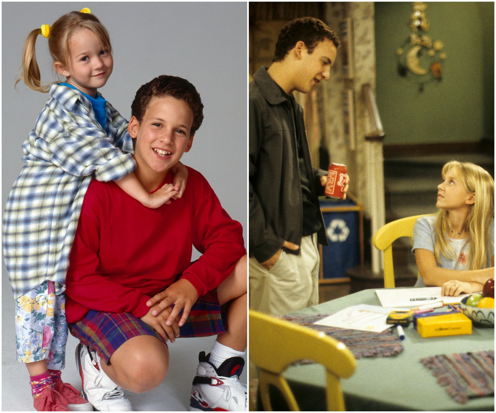
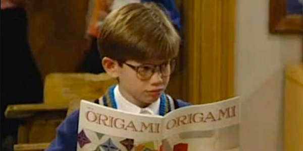

Cast and Characters
- Cory Matthews (Ben Savage) 158 episodes
- George Feeny (William Daniels) 158 episodes
- Shawn Hunter (Rider Strong) 158 episodes
- Eric Matthews (Will Friedle) 158 episodes
- Amy Matthews (Betsy Randle) 158 episodes
- Alan Matthews (William Russ) 154 episodes
- Topanga Lawrence (Danielle Fishel) 145 episodes
- Morgan Matthews

- Lindsay Ridgeway (seasons 3-7)) 74 episodes,
- Lily Nicksay (seasons 1-2) 38 episodes
- Jack Hunter (Matthew Lawrence) 68 episodes
- Jonathan Turner (Anthony Tyler Quinn) 53 episodes
- Angela Moore (Trina McGee-Davis) 59 episodes
- Rachel McGuire (Maitland Ward) 45 episodes

- Stuart Minkus (Lee Norris) 23 episodes

Back to Top